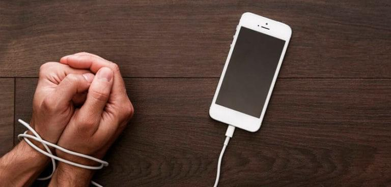

Conoce los riesgos y aprende cómo protegerte
El uso excesivo del smartphone no solo afecta el cuerpo, sino también la mente, con efectos como la disminución de la calidad del sueño, dolores crónicos, reducción de la concentración y aumento del estrés.